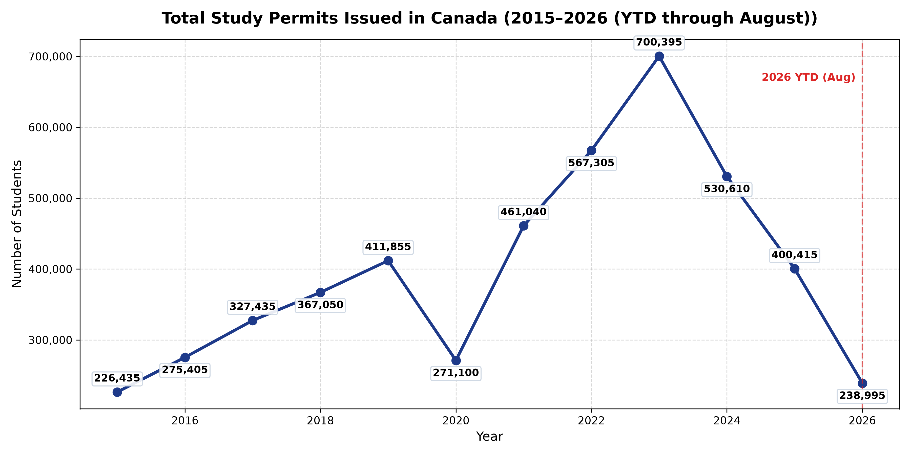
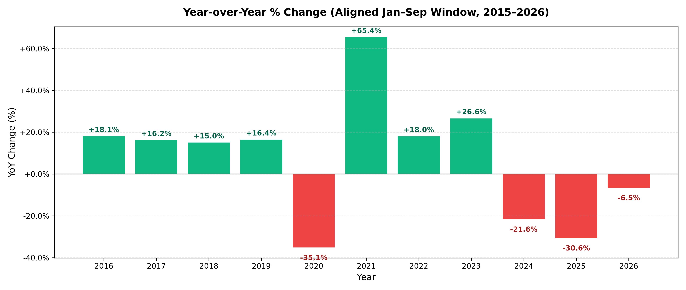

The Shift in Canadian Study Permits
An empirical analysis of international student flows into Canada, from historic expansion through peak intake and the measurable impact of federal policy caps.
Chapter 1: The Decade of Growth & The 2023 Peak
Between 2015 and 2023, Canada experienced an unprecedented surge in international student enrollment. Following the 2020 pandemic dip (~271K), study permit issuance grew at a record-breaking pace, culminating in an all-time peak of 700,395 permits in 2023.

Chapter 2: Top 10 Source Countries
Over the 2015–2026 period, international student intake has been heavily concentrated in a small group of key partner nations. India and China account for the vast majority of cumulative permit holders.

Chapter 3: Interactive Country Comparison Tool
Explore and compare the 12-year trajectory of any country in the dataset (2015–2026). Select two countries to visualize how regional dynamics and policy shifts impacted student flows differently.
Chapter 4: The "August Rush" & Seasonality
Permit issuance strictly adheres to the Canadian academic intake calendar. Late summer (August and September) consistently accounts for the highest annual volume as universities and colleges prepare for Fall matriculation.

Chapter 5: Measuring the Policy Cap Impact (2024 – 2026)
In early 2024, Immigration, Refugees and Citizenship Canada (IRCC) introduced an intake cap and provincial attestation letters (PALs) to stabilize international student growth. The data reveals the decisive impact of these measures:
- 2024: Total permits dropped -24.2% (from 700K to 530K) following the initial cap implementation.
- 2025: Contraction continued with another -24.5% decline down to 400K as full compliance took hold.
- 2026 (YTD): Issuance volumes reached 273,805 through September, reflecting the ongoing stabilized baseline following the federal intake caps.
